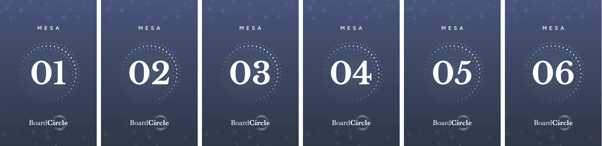

Talenses Executive × FTI Consulting · 2026
Board Circle
Identidade visual completa para o Board Circle, iniciativa de governança e conselhos. Criei a marca e desdobrei para o book “Conselho que Gera Valor”, save the date, convite, papelaria do evento de lançamento e o loop de telão.

O desafio
A Talenses Executive e a FTI Consulting queriam lançar uma iniciativa para conselheiros e executivos de alto nível. A marca precisava ter a sobriedade de um conselho de administração, sem parecer fria ou burocrática.
Além da marca, era preciso entregar um book de conteúdo e todo o material do evento de lançamento, em 27 de outubro de 2026, com prazo de gráfica.
O processo
A marca combina uma serifa clássica com um símbolo de pontos que formam um círculo. A paleta fica no azul-grafite, com dourado em detalhes, e o mesmo padrão de pontos vira grafismo em todas as peças.
O book “Conselho que Gera Valor” tem 24 páginas e passou por 21 versões até a prova de gráfica final. Montei um sistema editorial com capítulos numerados, aberturas escuras, destaques de dados e citações.

Para o evento, a identidade foi para o convite (cinco versões), o save the date, os displays de mesa, crachás, backdrop, ecobag e a tag do azeite de presente, além do loop animado do telão.



O resultado
A marca estreou no evento de lançamento, com uma linguagem visual única do convite ao telão, e o book segue como material de relacionamento com conselheiros.
- 21versões do book até a gráfica
- 24páginas de conteúdo
- 5versões do convite
- 10+peças para o evento